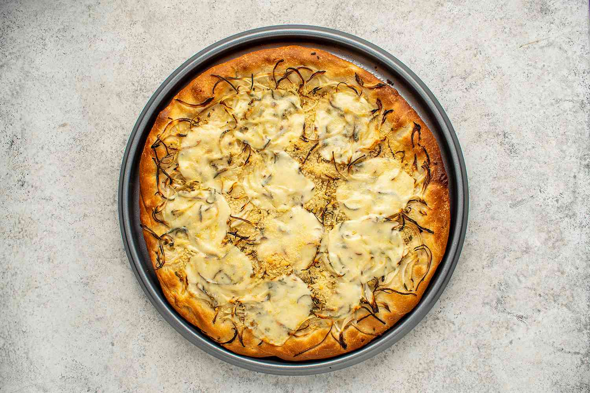

Similar to the Genovese focaccia, fugazza is one of many traditional Argentinian dishes that was influenced by the Italian cuisine. It is made with sourdough and comes topped with a generous amount of caramelized onions. Fugazza's crust is usually a bit thicker, but neutral in flavor.
Meal prep time : 50 minutes
Servings : 4-6